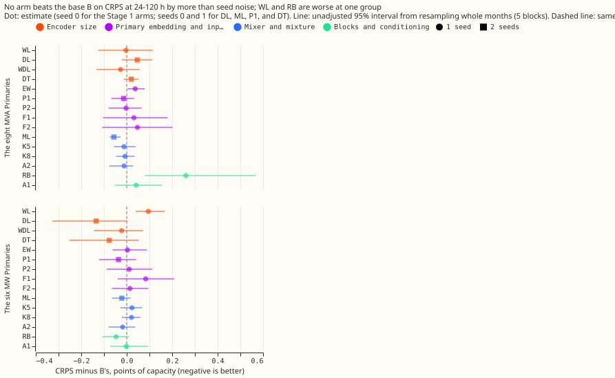
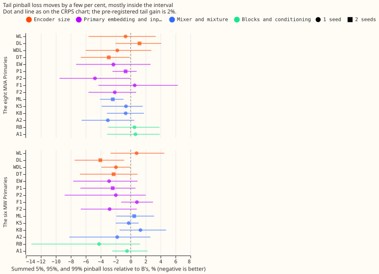

Is the modular demand network limited by the size of its encoders, by what they are given, or by its architecture?
Making the encoders of our demand forecasting neural network bigger, or giving them richer datetime inputs, did not lower the forecast error beyond what a different random seed changes. The network forecasts a Primary substation's demand from four parts: a weather encoder, a datetime encoder, a lag encoder (which reads demand from earlier days), and a mixer that combines them into a forecast distribution. We changed one part at a time (15 arms), refitted each arm on the same five test months as experiment 572's best network (the base B), and compared the error, measured as CRPS in points of effective capacity (percentage points of the Primary's capacity; lower is better). The Primaries split into the eight MVA Primaries and the six MW Primaries, which differ in how their power is metered, so they are scored apart. The one large-looking gain is the larger datetime encoder (DL) at the six MW Primaries, 0.135 lower than B. A copy of DL with the same depth and no extra width (DT) achieved 0.077 of it, and the intervals of both include zero.
Every number is interim and unaudited. The Primaries appear as D-numbers. The real-event absorbed share and the encoder probes of the brief were not run (see "Not run").
What the base holds, and what was changed
The base datetime encoder already holds hour harmonics 1 and 2 and a day-of-week one-hot. Its 21
input columns are cos_zenith, sin_azimuth, cos_azimuth; sin_hour, cos_hour, sin_hour_2,
cos_hour_2 (local hour); dow_1 to dow_7; covid; christmas_inside, christmas_days,
christmas_tent; and bank_holiday, nearest_days, nearest_inside. F1 therefore adds only 14
columns (hour harmonics 3 and 4 of the fractional local hour, 2 day-of-week harmonics, 3 day-of-year
harmonics), and F2 adds a fifteenth column, an Economy 7 proxy (1 between 00:30 and 07:30 local time
with a 10-minute logistic ramp at each edge; the real tariff window varies by supplier). The base
has 3,104 weights in the weather encoder and 4,000 in the datetime encoder.
Arms run (code in ml-experiments/00579-*/, one change each to B; the encoder-changing arms
were pre-trained afresh on the ERA5 and CAMS rows):
- Encoder size: WL, DL, WDL (2 hidden layers of 256 units and 64 outputs in the weather encoder, the datetime encoder, or both; DL has 89,920 datetime-encoder weights), and DT (C-tied: DL's shape with each layer's units a weight-tied copy of 64-unit layers, 8,160 weights, so it keeps DL's depth but not its width).
- Embedding and inputs: EW (Primary embedding 16 wide instead of 8), P1 (separate 16-wide embedding for the datetime encoder), P2 (learnt half-hour-of-day embedding per Primary), F1, F2.
- Mixer and mixture: ML (3 layers of 256), K5 and K8 (5 and 8 mixture components), A2 (rank-4 per-Primary adapter on the mixer's last layer). These four re-use experiment 572's stored encoders and fine-tune only.
- Blocks and conditioning: RB (pre-layer-norm residual blocks in both encoders and the mixer; with one hidden layer this is about 4 times the encoder weights, so RB tests depth and size as well as block type), A1 (FiLM conditioning of both encoders by the Primary embedding).
B is experiment 572's v3+D5 (stored forecasts and weights). The new code reproduces its fit exactly on one fold and seed (20 epochs, validation negative log-likelihood 0.396829 in both). In P1 and P2 the extra embeddings train in fine-tuning at the normal rate while the encoder layers stay frozen, as the shared Primary embedding does in B.
Result
Stage 1 (seed 0, all arms) and Stage 2 (seed 1 for DL, ML, P1, and DT). CRPS at 24-120 h, in points of effective capacity (B is 4.427 at the eight MVA Primaries and 3.327 at the six MW Primaries; M0 is 4.803 and 3.641):
| Arm | Eight MVA Primaries | Six MW Primaries | Tail pinball relative to B, eight / six |
|---|---|---|---|
| WL | -0.003 | +0.095 | -0.7% / +0.8% |
| DL (2 seeds) | +0.046 | -0.135 | +1.2% / -4.1% |
| DT (2 seeds) | +0.020 | -0.077 | -2.9% / -2.3% |
| WDL | -0.027 | -0.022 | -1.8% / -2.0% |
| EW | +0.037 | +0.003 | -2.3% / -2.9% |
| ML (2 seeds) | -0.057 | -0.021 | -2.4% / +0.5% |
| K5 | -0.012 | +0.023 | -0.6% / -0.3% |
| K8 | -0.007 | +0.021 | -0.7% / +1.3% |
| RB | +0.260 | -0.047 | +0.5% / -4.2% |
| F1 | +0.032 | +0.084 | +0.5% / +0.8% |
| F2 | +0.047 | +0.014 | -2.1% / -2.8% |
| P1 (2 seeds) | -0.014 | -0.036 | -0.7% / -2.4% |
| P2 | -0.003 | +0.011 | -4.8% / -2.0% |
| A1 | +0.041 | -0.001 | +0.6% / -0.5% |
| A2 | -0.012 | -0.018 | -3.0% / -1.8% |
Each cell is the arm's CRPS minus B's (negative is an improvement); arms with one seed are compared with B's seed 0, and the arms marked 2 seeds with B's mean of seeds 0 and 1. No arm met the CRPS rule (a gain of at least the minimum detectable effect with 4 of 5 folds agreeing). The two-seed minimum detectable effect is 0.123 at both groups (the brief's stored-seed values were 0.113 and 0.128), and the noise of a difference between two single-seed fits is about 0.25. The tail rule (2% gain) was met by 9 of the 15 arms, which shows that it is too loose for single-seed contrasts. I therefore chose the Stage 2 arms by hand: DL (the maintainer's hypothesis, and the largest gain at the six MW Primaries), ML (the clearest sign at the eight MVA Primaries), and P1.


Stage 2 counted tests (16, Bonferroni, month-block interval of 5 blocks, which is near the minimum to maximum of the folds): only ML at the eight MVA Primaries excludes zero (CRPS -0.057, interval -0.079 to -0.012; tail pinball -2.4%, which is -0.047 in loss units, interval -0.096 to -0.014), and the gain is under half of the minimum detectable effect. DL at the six MW Primaries is -0.135 with interval -0.437 to 0.044. DL against DT is -0.058 at the six MW Primaries (interval -0.205 to 0.031) and +0.026 at the eight (interval -0.085 to 0.131). Leave-D8-out: ML gains -0.046 without D8 (4 of 5 folds), so the ML sign does not rest on D8.
Slices at the six MW Primaries (descriptive; slice minimum detectable effects are 0.38 for cold winter nights and 0.97 for Christmas week). DL changes cold winter nights by -0.434 (3 of 5 folds better) and Christmas week by -1.156 (Christmas week falls in one fold only, so its interval is degenerate). The gain is largest in the slices the maintainer's hypothesis names, but both changes are inside their slice minimum detectable effect, so the pattern is not established. F1 and F2 change cold winter nights by -0.164 and -0.046 at the six MW Primaries and Christmas week by +0.443 and +0.619; they do not show a gain. Sunny days: no arm moves them by more than 0.2.
Leak. The injected 7-day shift (stress, in points of capacity) is 7.29 for B, 6.59 for DL, 6.45 for ML, and 6.72 for P1, so the three Stage 2 arms are within 1.0 of B, and all four are above the flagged 6.0 limit, B included. Lags aged by one extra day worsen the CRPS of every arm by 0.006 to 0.036 at 24-120 h, as they do for B.
K5 and K8 did not collapse. Averaged over the 10 fits, the smallest component weight is 0.106 (K5) and 0.060 (K8), and the smallest weight in any single fit is 0.058 (K5) and 0.040 (K8), all above the 0.02 flag.
The 16-Primary table (primaries.csv, seed 0) shows each of DL, ML, and P1 at or better than M0
at 14 of 16 Primaries, with different exceptions: DL loses to M0 at D8 (10.23 against 9.46) and D5
(5.97 against 5.78); ML at D8 (9.69) and D5 (5.83); P1 at D8 (9.74) and D11. B itself loses to M0 at
D5, D8, D10, and D11. DL is 0.27 worse than B at D8 and 0.77 better at D15. A2 does not improve the
four Primaries with the largest error (D15, D8, D12, D5): it worsens D15, D12, and D5 and improves
D8.
Predictions
- DL gains at least 0.05 at one group, largest on cold winter nights and Christmas week: met in size at the six MW Primaries (-0.135), not at the eight MVA Primaries (+0.046); the interval includes zero, and the slice pattern is not established (see above).
- WL within 0.03 of B: not met at the six MW Primaries (+0.095, worse); met at the eight MVA Primaries. XL was not run.
- F1 gains at least 0.03 on cold winter nights or Christmas week: met in size on cold winter nights (-0.052 and -0.164) inside the slice minimum detectable effect; Christmas week is worse. F2 gains at least 0.03 on cold winter nights: met in size at the six MW Primaries only (-0.046).
- P1 and P2 gain at least 0.03 at one group: P1 yes in size (-0.036 at the six MW Primaries, inside the minimum detectable effect); P2 no.
- K5 and K8 lower tail pinball by at least 2% with no collapse: not met (-0.6% and -0.7% at the eight MVA Primaries).
- RB, GB, ML, A1, A2, EW within the minimum detectable effect of B: RB is 0.26 worse at the eight MVA Primaries (interval excludes zero); ML, A1, A2, and EW are within it. A2 does not improve the weakest 4 Primaries. GB was not run.
- C-tied within the minimum detectable effect of B: held as written (DT -0.077, minimum detectable effect 0.123). The brief also said the prediction fails if DT gains at least half of DL's gain; DT gains 0.077 of DL's 0.135 at the six MW Primaries, so the brief's clause fails.
- Leak: the injected shift of each Stage 2 arm is within 1.0 of B's; the real-event absorbed share was not run.
Not run
- F3, U, and GB were cut to stay under the 5 GPU-h ceiling, and XL was not run because no encoder-size arm cleared the screen. EW was run at 16 only.
- The real-event absorbed-share harness and the probes of addenda 8 and 9 were not run, because the harness code of experiments 556 and 566 is not ported to the new arms and experiment 572 also left it out. The leak result above is the injected shift alone.
- Seeds 2 to 4 were not run, so every contrast has 1 or 2 seeds.
Checks
- Median forecast minus mean forecast per site: not computed.
- Error of the mean or median forecast beside the quantile-score contrasts: not computed; the tail pinball loss at the 5%, 95%, and 99% quantiles is reported beside CRPS.
- Audit triggers: the brief's C-tied clause failed (DT gained more than half of DL's gain), which is an explanation to test next (more seeds, and a tied control that also matches B's depth), not a method fault; no other trigger fired. No audit was run.
- Timing asserts (row by row, with examples printed in the checks JSON files): weather from the run at or before the origin minus 9 h; every lag at or before the origin minus 24 h; every extra datetime column a function of the valid time's grid index only (asserted against the valid time for training and test rows).
- Cost: about 3.4 GPU-h of wall time on a shared GPU (Stage 1 about 2.3 h, Stage 2 and C-tied about 1.1 h).
What the next experiment should answer
Does DL's gain at the six MW Primaries survive 5 seeds, and does DT's gain survive them too? If DT's gain survives, depth, training noise, or regularisation explains it better than capacity, and a one-layer tied control would separate depth from the rest.